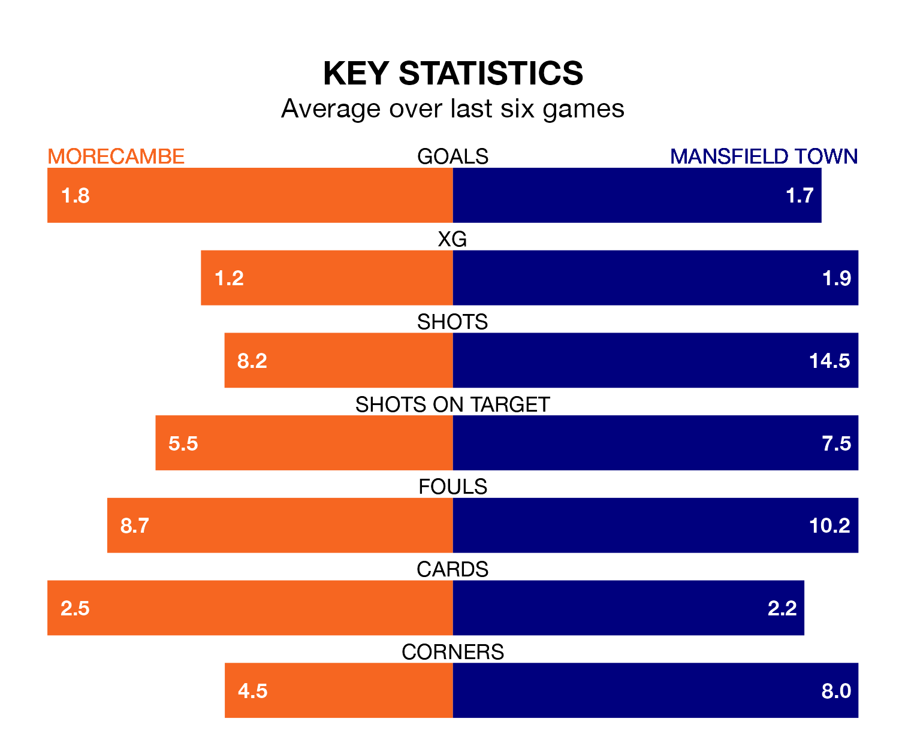

Mansfield Town travel to the Mazuma Stadium for Saturday's match against Morecambe looking to bounce back from defeat last time out in EFL League Two.
The Stags, who sit second in the league after 25 games, fell to a 1-0 home defeat to Crewe Alexandra on January 6.
They face a Morecambe side who secured a draw in their last match, a 2-2 tie with Harrogate Town, and who sit 17th in the table.
In Christy Pym, Mansfield can rely on one of the league's safest pair of hands. He has kept 10 clean sheets in his 25 appearances this season, and no 'keeper has prevented the opposition scoring more often in EFL League Two.
In Morecambe's net, Stuart Moore has three clean sheets in 12 games. He has conceded a goal every 74 minutes, 60% more often than the 118 minutes between goals for Pym.
With 44 goals in 25 games so far this season, Town are scoring more than average in the league with 1.8 goals per game. And they are conceding fewer than average, letting in 20 goals at a rate of 0.8 per game.
The Shrimps, meanwhile, are average scorers, with 1.5 goals per game. They have conceded 1.7 goals per game.
The home side are in disappointing form in EFL League Two, with one win and three draws from their last six games.
With four wins and a draw over that period, the Stags' form is much better – they have taken 13 points from 18, compared to Morecambe's six.
In the last five years, Morecambe and Mansfield have played each other on seven occasions. Mansfield won three of them and they drew four times.
On average, the Shrimps scored 0.9 goals and the Stags 2.0 in those matches.
Their last meeting was on August 12, when Mansfield won 3-0 at home.
Updated: 11:31, 09/01/24